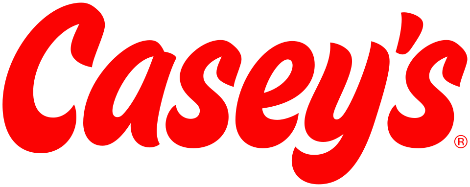

Casey's General Stores
Casey's General Stores는 미국 중서부와 남부에서 편의점 체인을 운영하는 미국 기업이다. 본사는 아이오와주 Ankeny에 있다.
최종 업데이트

Casey's General Stores는 어떤 브랜드인가
이 회사는 미국 중서부와 남부에 2,950개의 편의점을 운영하며, 매장 대부분은 인구 20,000명 미만인 소도시에 있다. 미국 편의점 체인 가운데 7-Eleven과 Circle K/Alimentation Couche-Tard에 이어 세 번째로 규모가 크다.
미국 소유 편의점 체인 중에서는 가장 크다. 피자 매출을 기준으로 미국에서 다섯 번째로 큰 피자 체인이기도 하다.
Fortune 500에서 282위, Forbes Global 2000에서 1092위에 올라 있다.
Casey's General Stores는 어떻게 시작되고 성장했나
Donald Lamberti는 1959년 아버지에게 빌린 아이오와주 디모인의 주유소를 편의점으로 개조해 9년간 운영했다. 그는 1968년 Kurvin C.
Fish의 제안에 따라 아이오와주 Boone의 Square Deal Oil Company 주유소를 인수하고, Fish의 이름에서 따온 Casey's로 이름을 변경해 편의점으로 전환했다. Boone 매장의 성공 이후 Creston과 Waukee에 매장을 열었으며, 특히 Waukee 매장이 가장 좋은 성과를 내자 인구 5,000명 미만의 소도시를 중심으로 점포를 확대했다.
1970년대 말에는 매장이 118개로 늘었고 첫 창고를 열었다.
Casey's General Stores의 브랜드 아이덴티티는 무엇인가
인구 20,000명 미만의 소도시에 매장 대부분을 두며, 미국 소유 편의점 체인 중 가장 큰 규모라는 점이 구별되는 특징이다.
Casey's General Stores의 대표 제품과 서비스는 무엇인가
매장 사업은 인구가 적은 지역의 편의점을 중심으로 구성하며, 일부 소형 매장은 주방 없이 운영한다. 회사는 1983년 무렵 매장에서 도넛과 피자를 판매하기 시작했으며, 피자는 매출 기준으로 미국 내 다섯 번째 규모의 체인을 형성한다.
2021년부터 주방이 없는 소형 매장은 goodstop by Casey’s라는 이름으로 운영한다. 2016년에는 모바일 앱을 출시했고 2020년에는 로열티 프로그램을 도입했으며, Ankeny와 Terre Haute, Joplin의 유통센터가 매장망을 지원한다.
Casey's General Stores는 지금 어떤 상태인가
이 회사는 2,950개 편의점을 운영하는 미국 소유 체인이며, 본사는 Ankeny에 있다. 2020년 새 로고를 포함한 브랜드 변경을 발표하고 간판에서 General Stores를 제외했지만, 해당 표현은 2022년까지 법인명에 남아 있었다.
2024년 Buchanan Energy를 인수해 Bucky's Convenience Stores 94개의 소유주가 됐으며, 규제 당국의 요구에 따라 매장 6개를 매각했다.
Casey's General Stores 로고는 어떻게 변해왔나
자주 묻는 질문
Casey's General Stores는 어느 나라 브랜드인가요?
Casey's General Stores는 미국의 리테일·커머스 브랜드입니다.
Casey's General Stores는 언제 설립되었나요?
Casey's General Stores는 1968년 설립되었습니다.
Casey's General Stores의 브랜드 아이덴티티는 무엇인가요?
인구 20,000명 미만의 소도시에 매장 대부분을 두며, 미국 소유 편의점 체인 중 가장 큰 규모라는 점이 구별되는 특징이다.
Casey's General Stores의 대표 제품은 무엇인가요?
매장 사업은 인구가 적은 지역의 편의점을 중심으로 구성하며, 일부 소형 매장은 주방 없이 운영한다.
Casey's General Stores는 어느 기업이 소유하고 있나요?
이 회사는 2,950개 편의점을 운영하는 미국 소유 체인이며, 본사는 Ankeny에 있다.
Casey's General Stores의 본사는 어디에 있나요?
Casey's General Stores의 본사는 Ankeny에 있습니다(위키데이터 기준).
Casey's General Stores의 공식 웹사이트는 어디인가요?
Casey's General Stores의 공식 웹사이트는 https://www.caseys.com 입니다.
출처와 검증
Casey's General Stores 관련 참고: 공식 웹사이트 · 위키데이터 Q2940968 · 영어 위키백과. 브랜드명은 한글과 원어를 함께 표기하되 데이터에 없는 표기는 만들지 않습니다. 기원 국가·설립연도는 검수된 정의문에서 확인된 값을 우선하고, 없을 때만 공식 웹사이트 URL이 일치하는 위키데이터 개체의 값을 씁니다. 위키데이터 값은 2026-09-12 기준입니다.